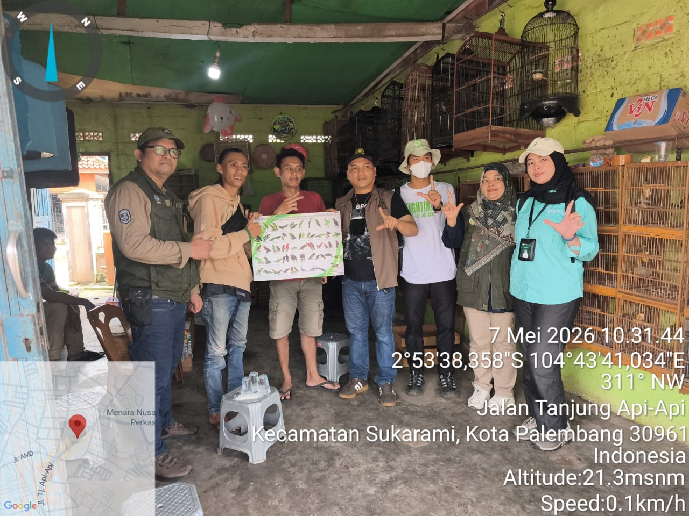

Laporan Operasional Eksitu Luar Kawasan
Penyelamatan & Evakuasi 1 Ekor Trenggiling (Manis javanica) di Tanjung Api-Api
Tim Resor BKSDA Sumsel bersama mahasiswa magang Polsri menindaklanjuti laporan serahan satwa dilindungi dari warga (Bpk. Jefri) di kawasan Tanjung Api-Api.
- Kronologis: Pada 7 Oktober 2026 pukul 23.00 WIB, pelapor mendengar anjing peliharaannya menggonggong berkali-kali di belakang rumah. Saat diperiksa, ditemukan 1 ekor trenggiling dalam kondisi digigit anjing. Pelapor segera menghubungi Call Center BKSDA.
- Hasil Kegiatan: Satwa berhasil dievakuasi ke PRS Punti Kayu. Kondisi fisik luar mengalami luka di bagian punggung dekat ekor. Satwa saat ini menjalani perawatan medis intensif dan durasi karantina sebelum dilepasliarkan kembali ke habitat alaminya.

Patroli Peredaran Tumbuhan dan Satwa liar di Kota Palembang
Tim Satgas POLHUT BKSDA Sumsel bersama mitra NGO FLIGHT Protecting Birds melakukan sosialisasi dan pemeriksaan rutin terhadap pedagang burung serta pasar hewan guna mencegah perdagangan satwa liar yang dilindungi secara ilegal.
Penangkapan & Evakuasi Satwa Dilindungi Berdasarkan Laporan Masyarakat
Gugus Tugas Penyelamatan Satwa menindaklanjuti aduan warga terkait kemunculan dan konflik satwa liar di pemukiman. Tim berhasil mengamankan satwa Kukang (Nycticebus) secara aman untuk dilakukan pemeriksaan medis dan karantina.